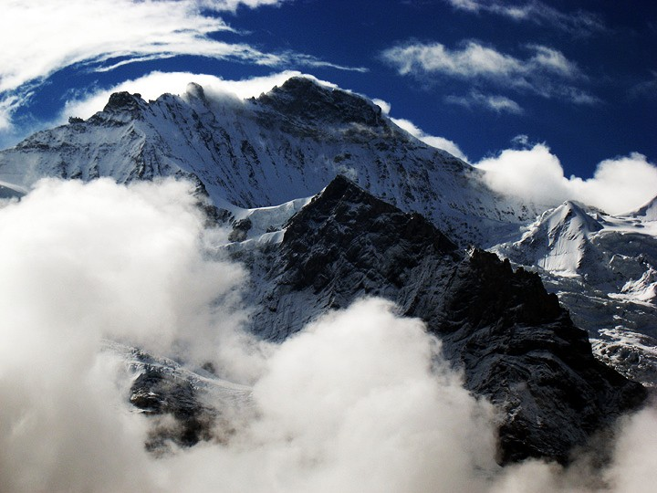

something
The name Jungfrau ("maiden, virgin"), which refers to the highest of the three prominent mountains overlooking the Interlaken region, along with the Mönch ("monk") and the Eiger ("ogre"), is most likely derived from the name Jungfrauenberg given to Wengernalp, the alpine meadow directly facing the huge northern side of the Jungfrau, across the Trummelbach gorge. Wengernalp was so named for the nuns of Interlaken Monastery, its historical owner. Contrary to popular belief, the name did not originate from the appearance of the snow-covered mountain, the latter looking like a veiled woman. The "virgin" peak was heavily romanticized as "goddess" or "priestess" in late 18th to 19th century Romanticism. Its summit, considered inaccessible, remained untouched until the 19th century. After the first ascent in 1811 by Swiss alpinist Johann Rudolf Meyer, the peak was jokingly referred to as "Mme Meyer" (Mrs. Meyer).
The summit was first reached on August 3, 1811, by the Meyer brothers of Aarau and two chamois hunters from Valais. The ascent followed a long expedition over the glaciers and high passes of the Bernese Alps. It was not until 1865 that a more direct route on the northern side was opened.The construction of the Jungfrau Railway in the early 20th century, which connects Kleine Scheidegg to the Jungfraujoch, the saddle between the Mönch and the Jungfrau, made the area one of the most-visited places in the Alps. Along with the Aletsch Glacier to the south, the Jungfrau is part of the Jungfrau-Aletsch area, which was declared a World Heritage Site in 2001.
Tourism
Named after the Jungfrau, the Jungfrau Region of the Bernese Oberland is a major tourist destination in the Alps and includes a large number of railways and other facilities. While the mountain peak was once difficult to access, the Jungfrau Railway, a rack railway, now goes to the Jungfraujoch railway station at 3,454 m (11,332 ft), therefore providing an easy access to the upper Aletsch Glacier and a relatively short access to the Jungfrau itself, the height difference between the station and the summit being only 704 metres and the horizontal distance being slightly less than 2 kilometres. As a result, in the popular mind, the Jungfrau has become a mountain associated with the Bernese Oberland and Interlaken, rather than with Upper Valais. In 1893, Adolf Guyer-Zeller conceived of the idea of a railway tunnel to the Jungfraujoch to make the glaciated areas on its south side more accessible. The building of the tunnel took 16 years and the summit station was not opened before 1912. The goal was in fact to reach the summit of the Jungfrau with an elevator from the highest railway station, located inside the mountain. The complete project was not realized because of the outbreak of the World War I.[5] Nevertheless, it was at the time one of the highest railways in the world and remains today the highest in Europe and the only (non-cable) railway on Earth going well past the perennial snow-line.